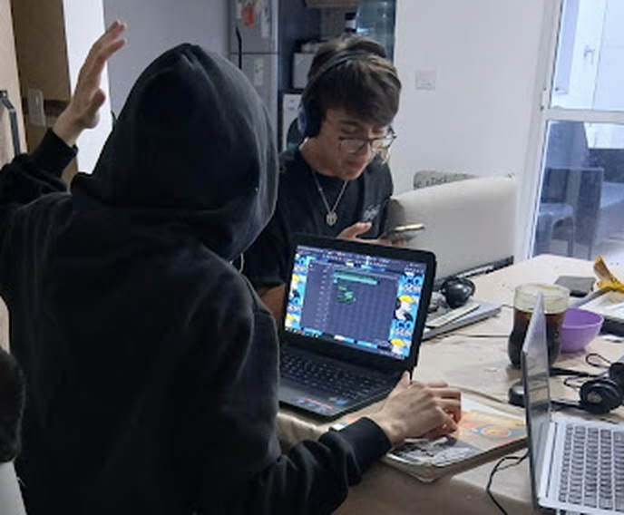

Tu estudio de mastering
Cargá una canción, elegí un preset, escuchá cómo suena en distintos dispositivos y exportá. El original nunca se modifica.
¿Primera vez? Mirá la página de Tips.
¿Qué significan estos números?
dBFS: escala del audio digital. 0 dBFS es el máximo posible; cuanto más negativo, más bajo suena. Por ejemplo, −6 dBFS es la mitad de amplitud.
Pico: la muestra más alta de la canción. Cerca de 0 deja poco margen para procesar.
RMS: nivel medio de toda la canción. Se parece a "qué tan fuerte suena en promedio".
Muestras en el tope: cuántas muestras tocan el máximo. Si son muchas, es probable que haya clipping (recorte, distorsión digital).
Tu archivo original nunca se modifica: todo ocurre en la memoria del navegador.